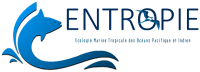
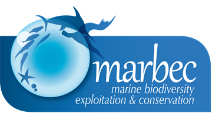
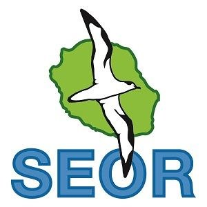
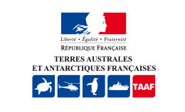
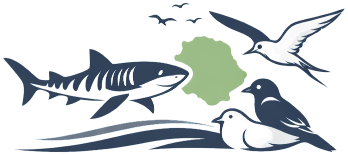
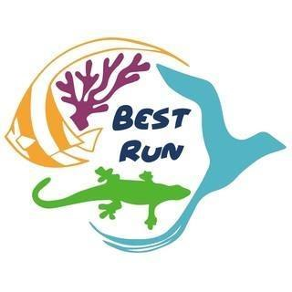
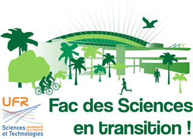
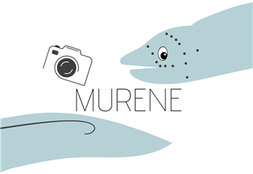

2013
2014
2015
2016
2017
2018
2019
2020
2021
2022
2023
2024
2025
2026
Today
Education
2013 to 2016
BSc in Organism and Population Biology
University of Reunion Island, Université Laval (Quebec)
Foundations in general biology and ecology, including a third year on
exchange in Quebec focused on population dynamics, wildlife management and
conservation. Strong field and laboratory component.
- General ecology
- Zoology
- Native, endemic and introduced species
- Population dynamics
2016 to 2018
MSc BEST-ALI
University of Reunion Island
Biodiversity of Tropical Ecosystems, specialising in Aquatic, Coastal and
Island environments. A research-oriented master's covering tropical and
island ecology and the fundamentals of environmental impact assessment.
- Coral reefs
- Mangroves and seagrass
- Fisheries resources
- Impact assessment
2018 to 2022
PhD in marine biology
University of Reunion Island, UMR ENTROPIE, UMR MARBEC
"Life-history traits and habitat selection in bull sharks and tiger sharks
caught off Reunion Island." Defended in 2022.
- Sclerochronology
- Isotopes C / N / O
- Trace elements
- Laser ICP-MS
Professional
2017
Master's 1 placement: shark trophic ecology

UMR ENTROPIE, Reunion Island
Study of the diet of tiger and bull sharks: dissections, identification of
stomach contents (fish, squid, otoliths) and analysis of C/N isotope ratios
in tissues.
- Dissection
- Stomach contents
- Otoliths
- C/N isotopes
2018
Master's 2 placement: age and growth

UMR ENTROPIE (Reunion Island) and UMR MARBEC (Montpellier)
Determining shark age and growth from the growth bands of their vertebrae,
and exploring the chemical signature along those vertebrae to reconstruct
movements and ontogenetic shifts.
- Sclerochronology
- Trace elements
- Laser ICP-MS
- Growth models
2018 to 2022
Doctoral researcher and lecturer
University of Reunion Island, UMR ENTROPIE, UMR MARBEC
Thesis on the life-history traits and habitat selection of large coastal
sharks. Alongside: extensive teaching at undergraduate and master's level,
and participation in every edition of the Fête de la Science and European
Researchers' Night.
- Undergraduate and MSc teaching
- Science outreach
- 3rd prize, Doctoriales innovation award
2022 to 2024
Conservation of the Reunion cuckooshrike

SEOR, Reunion Island Ornithological Society
Two years on the conservation of the Reunion cuckooshrike
(Coracina newtoni), one of the rarest birds in the world, found
only on the Roche Écrite massif. Extreme fieldwork: dense humid tropical
forest, steep ramparts, weekly bivouacs, supervision of hundreds of volunteers.
- Surveying
- Breeding monitoring
- Rat control
- Feral cat control
- Rodenticide side-effect studies
- Comparison of control methods
- Mapping
- Report writing
2024 to 2025
Environment officer, Scattered Islands

TAAF, French Southern and Antarctic Lands
Three missions of around two months each on Juan de Nova, interspersed with
periods at headquarters in Reunion Island for data processing and campaign
preparation. As the only scientist on the island, sharing it with a military
detachment, I collected all species and ecosystem data required to identify
conservation priorities.
- Sea turtle nesting tracks
- Weekly wader surveys
- Sooty and greater crested tern densities
- Barn owl, grey heron, pied crow
- Juan de Nova skinks
- Rat and mouse capture-mark-recapture
- Invasive plant control
- Conservation of 20 threatened plant species
- Plastic pollution monitoring
2026
Barau's petrel rescue mission
SEOR, wildlife care centre
Rescue campaign for Barau's petrel (Pterodroma baraui): collecting
grounded birds across the whole island, treating them and returning them to
the wild, so that fledglings disoriented by artificial light can take flight.
- Wildlife care centre
- Seabird rescue
- Light pollution
Since 2026
ECORUN, ecology consultant

Independent practice, Reunion Island
Launch of my independent practice to serve organisations that need
high-level ecological expertise without being able to recruit full time:
research, conservation, outreach, fieldwork, advice, writing and analysis.
Voluntary
Since 2017
Co-founder and chairman of Best Run

Nature protection association, Reunion Island
Association founded during my master's degree. Participatory conservation
work in partnership with other associations, land and marine litter
clean-ups, research programmes (coral reefs, fish ecology, plastic
pollution in the Indian Ocean), awareness campaigns and guided
natural-history outings.
- Intern supervision
- Employee management
- Research programmes
- University projects
- Regional stakeholder meetings
- Steering committees
- Talks and school workshops
Since 2018, several times a year
Conservation work parties and citizen science
With the naturalist associations of Reunion Island
Regular involvement, several times a year for many years, in the
conservation work carried out across the island:
- Planting and restoration of sea turtle nesting beaches, with the CEDTM
- Rat control work parties for the conservation of the Reunion cuckooshrike, with SEOR
- Restoration of the Manapany cliffs for the Manapany day gecko, with Nature Océan Indien
- Restoration of a primary forest, with the IRI
- Restoration of a wetland, with SEOR
- Planting of an arboretum in a secondary school in Sainte-Suzanne
- Search for and discovery of a natural area holding some thirty very rare endemic plant species, with the Parade association, data passed on to the relevant bodies
To these are added many organised litter clean-ups, as well as guided
natural-history outings I have led, in the forest and underwater.
- Planting and restoration
- Rat control
- Rare endemic species
- Litter clean-ups
- Guided natural-history outings
2020 to 2022
"Science Faculty in Transition" project

University campus, Reunion Island
A project I led to re-engage students on campus in the context of
post-Covid disengagement: enhancing an arboretum of rare native and endemic
species, protecting the trees and the site, rescuing seeds and seedlings
that were being lost, creating a nursery and a shared garden, and running
campus sustainability initiatives. A pioneering project, later taken up by
dedicated associations.
- Plant nursery
- Arboretum
- Shared garden
- Student engagement
2025 to 2026
Moray photo-identification project

Lagoons of Reunion Island
Developing a photo-identification method for morays in the lagoons of
Reunion Island: weekly fieldwork, photography, refinement of the method and
identification of individuals. Supervision of two Master's 1 students.
Analysis and writing in progress.
- Photo-identification
- Field protocol
- Population monitoring
- Intern supervision
- Data analysis